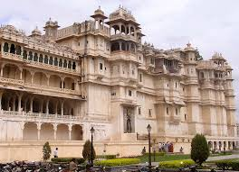
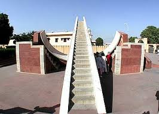
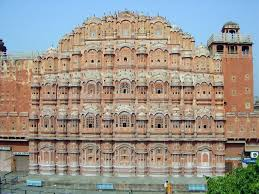
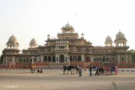
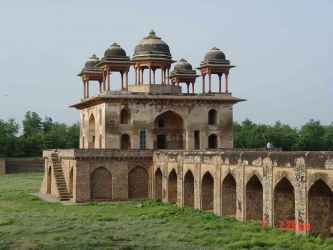

Jaipur-The Pink City
Major Attractions

CITY PALLACE
The City Palace is a historic landmark. The carved arches are supported by grey-white marble columns studded with floral motifs in gold and coloured stones. Two elephants carved in marble guard the entrance, where retainers whose families have served generations of rulers are at hand to serve as guides. The palace interior houses a Museum containing select collection of various types of Rajasthani dresses, a fascinating armoury of Mughal and Rajput weapons; swords of all shapes and sizes, with chased handles, some of them inlaid, enamelled, encrusted with jewels and encased in bold and magnificent scabbards.JANTAR MANTAR
Jantar mantar is one of Jai Singh's five remarkable observatories. Constructed with stone and marble its complex instruments whose settings and shapes are precisely and scientifically designed represent the high points of Medieval Indian astronomy. The Ram Yantras used for


Hawa Mahal
Built by the poet king Sawai Pratap Singh, the Hawa Mahal is the most strikingly designed monument in Jaipur. What is seen from the Sireh Deorhi Bazaar is the multiniched five storey high backside of the complex ( see it in photo gallery ). It was conceived to provide adequate vantage position behind delicate stone carved jali screens to the palace women for watching the royal processions passing through the bazaar below.ALBERT HALL
It is situated in the beautiful garden of Jaipur city, Ram Niwas Bagh. It was constructed by Maharaja Sawai Ram Singh in the year 1886 under the drought relief work of Rs 4 Lacs. The design of the building was done by Sir Swinton Jaicob. Presently the hall is used for museum purpose.

